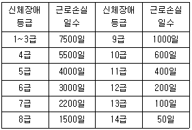
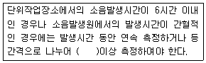
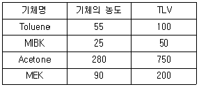
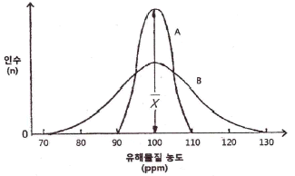
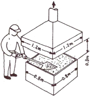
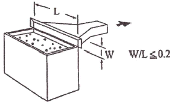
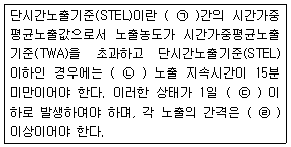
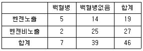

산업위생관리기사 (2018-03-04 기출문제)
1과목: 산업위생학개론
1. 전신피로의 정도를 평가하기 위하여 맥박을 측정한 값이 심한 전신피로 상태라고 판단되는 경우는?
- HR30~60 =107, HR150~180 =89, HR60~90 =101
- HR30~60 =110, HR150~180 =95, HR60~90 =108
- HR30~60 =114, HR150~180 =92, HR60~90 =118
- HR30~60 =116, HR150~180 =102, HR60~90 =108
(정답률: 72%)

2. 산업위생전문가들이 지켜야 할 윤리강령에 있어 전문가로서의 책임에 해당하는 것은?
- 일반 대중에 관한 사항은 정직하게 발표한다.
- 위험요소와 예방조치에 관하여 근로자와 상담한다.
- 과학적 방법의 적용과 자료의 해석에서 객관성을 유지한다.
- 위험요인의 측정, 평가 및 관리에 있어서 외부의 압력에 굴하지 않고 중립적 태도를 취한다.
(정답률: 68%)
3. Diethyl ketone(TLV=200ppm)을 사용하는 근로자의 작업시간이 9시간일 때 허용기준을 보정하였다. OSHA 보정법과 Brief and Scala 보정법을 적용하였을 경우 보정된 허용기준치 간의 차이는 약 몇 ppm인가?
- 5.⑤
- 11.11
- 22.22
- 33.33
(정답률: 74%)
4. 18세기 영국의 외과의사 Pott에 의해 직업성 암(癌)으로 보고되었고, 오늘날 검댕 속의 다환방향족 탄화수소가 원인인 것으로 밝혀진 질병은?
- 폐암
- 방광암
- 중피종
- 음낭암
(정답률: 89%)
5. 산업안전보건법의 목적을 설명한 것으로 맞는 것은?
- 헌법에 의하여 근로조건의 기준을 정함으로써 근로자의 기본적 생활을 보장, 향상시키며 균형있는 국가경제의 발전을 도모함
- 헌법의 평등이념에 따라 고용에서 남녀의 평등한 기회와 대우를 보장하고 모성보호와 작업능력을 개발하여 근로여성의 지위향상과 복지증진에 기여함
- 산업안전·보건에 관한 기준을 확립하고 그 책임의 소재를 명확하게 하여 산업재해를 예방하고 쾌적한 작업환경을 조성함으로써 근로자의 안전과 보건을 유지·증진함
- 모든 근로자가 각자의 능력을 개발, 발휘할 수 있는 직업에 취직할 기회를 제공하고, 산업에 필요한 노동력의 충족을 지원함으로써 근로자의 직업안정을 도모하고 균형있는 국민경제의 발전에 이바지함
(정답률: 90%)
6. 방사성 기체로 폐암 발생의 원인이 되는 실내공기 중 오염물질은?
- 석면
- 오존
- 라돈
- 포름알데히드
(정답률: 73%)
7. 육체적작업능력(PWC)이 16kcal/min인 근로자가 1일 8시간 동안 물체를 운반하고 있다. 이때의 작업 대사랑은 10kcal/mind고, 휴식시의 대사량은 1.5kcal/min이다. 이 사람이 쉬지 않고 계속하여 일할 수 있는 최대 허용시간은 약 몇 분인가? (단, logTend = b0+b1·E, b0 =3.720, b1 = -0.1949이다.)
- 60분
- 90분
- 120분
- 150분
(정답률: 55%)
8. 산업재해의 기본원인인 4M에 해당되지 않는 것은?
- 방식(Mode)
- 설비(Machine)
- 작업(Media)
- 관리(Management)
(정답률: 83%)
9. 보건관리자를 반드시 두어야 하는 사업장이 아닌 것은?
- 도금업
- 축산업
- 연탄 생산업
- 축전지(납 포함) 제조업
(정답률: 88%)
10. 고용노동부장관은 건강장해를 발생할 수 있는 업무에 일정기간 이상 종사한 근로자에 대하여 건강관리수첩을 교부하여야 한다. 건강관리수첩교부 대상 업무가 아닌 것은?
- 벤지딘염산염(중량비율 1% 초과 제제 포함)제조 취급업무
- 벤조트리클로리드 제조(태양광선에 의한 염소화반응에 제조)업무
- 제철용 코크스 또는 제철용 가스발생로 가스제조시 로상부 또는 근접작업
- 크롬산, 중크롬산, 또는 이들 염(중량 비율 0.1% 초과 제제 포함)을 제조하는 업무
(정답률: 48%)
11. 직업성 질환에 관한 설명으로 틀린 것은?
- 직업성 질환과 일반 질환은 그 한계가 뚜렷하다.
- 직업성 질환은 재해성 질환과 직업병으로 나눌 수 있다.
- 직업성 질환이란 어떤 직업에 종사함으로써 발생하는 업무상 질병을 의미한다.
- 직업병은 저농도 또는 저수준의 상태로 장시간 걸쳐 반복노출로 생긴 질병을 의미한다.
(정답률: 83%)
12. 교대근무제에 관한 설명으로 맞는 것은?
- 야간근무 종료 후 휴식은 24시간 전후로 한다.
- 야근은 가면(假眠)을 하더라도 10시간 이내가 좋다.
- 신체적 적응을 위하여 야간근무의 연속일수는 대략 1주일로 한다.
- 누적 피로를 회복하기 위해서는 정교대 방식보다는 역교대 방식이 좋다.
(정답률: 70%)
13. 300명의 근로자가 근무하는 A사업장에서 지난 한 해 동안 신체장애 12등급 4명과, 3급 1명의 재해자가 발생하였다. 신체장애 등급별 근로손실일수가 다음 표와 같을 대 해당 사업장의 강도율은 약 얼마인가?(단, 연간 52주, 주당 5일, 1일 8시간을 근무하였다.)

- 0.33
- 13.30
- 25.02
- 52.35
(정답률: 72%)
14. 근골격계 질환에 관한 설명으로 틀린 것은?
- 점액낭염(bursitis)은 관절 사이의 윤활액을 싸고 있는 윤활낭에 염증이 생기는 질병이다.
- 건초염(tenosynovitis)은 건막에 염증이 생긴 질환이며, 건염(tendonitis)은 건의 염증으로, 건염과 건초염을 정확히 구분하기 어렵다.
- 수근관 증후군(carpal tunnel sysdrome)은 반복적이고, 지속적인 손목의 압박, 무리한 힘 등으로 인해 수근관 내부에 정중신경이 손상되어 발생한다.
- 근염(myositis)은 근육이 잘못된 자세, 외부의 충격, 과도한 스트레스 등으로 수축되어 굳어지면 근섬유의 일부가 띠처럼 단단하게 변하여 근육의 특정 부위에 압통, 방사통, 목부위 운동제한, 두통 등의 증상이 나타난다.
(정답률: 63%)
15. 유해인자와 그로 인하여 발생되는 직업병의 연결이 틀린 것은?
- 크롬 - 폐암
- 이상기압 - 폐수종
- 망간 - 신장염
- 수은 - 악성중피종
(정답률: 76%)
16. 작업강도에 영향을 미치는 요인으로 틀린 것은?
- 작업밀도가 적다.
- 대인 접촉이 많다.
- 열량소비량이 크다.
- 작업대상의 종류가 많다.
(정답률: 68%)
17. 산업안전보건법령상 작업환경측정에 관한 내용으로 틀린 것은?
- 모든 측정은 개인시료채취방법으로만 실시하여야 한다.
- 작업환경측정을 실시하기 전에 예비조사를 실시하여야 한다.
- 작업환경측정자는 그 사업장에 소속된 사람으로 산업위생관리산업기사 이상의 자격을 가진 사람이다.
- 작업이 정상적으로 이루어져 작업시간과 유해인자에 대한 근로자의 노출정도를 정확히 평가할 수 있을 때 실시하여야 한다.
(정답률: 86%)
18. 중량물 취급작업시 NIOSH에서 제시하고 있는 최대허용기준(MPL)에 대한 설명으로 틀린 것은? (단, AL은 감시기준이다.)
- 역학조사 결과 MPL을 초과하는 직업에서 대부분의 근로자들에게 근육, 골격 장애가 나타났다.
- 노동생리학적 연구결과, MPL에 해당되는 작업에서 요구되는 에너지 대사량은 5kcal/min를 초과하였다.
- 인간공학적 연구결과 MPL에 해당되는 작업에서 디스크에 3400N의 압력이 부과되어 대부분의 근로자들이 이 압력에 견딜 수 없었다.
- MPL은 3AL에 해당되는 값으로 정신물리학적 연구결과, 남성근로자의 25%미만과 여성 근로자의 1%미만에서만 MPL수준의 작업을 수행할 수 있었다.
(정답률: 75%)
19. 심리학적 적성검사에서 지능검사 대상에 해당되는 항목은?
- 성격, 태도, 정신상태
- 언어, 기억, 추리, 귀납
- 수족협조능, 운동속도능, 형태지각능
- 직무에 관련된 기본지식과 숙련도, 사고력
(정답률: 77%)
20. 산업위생 전문가의 과제가 아닌 것은?
- 작업환경의 조사
- 작업환경조사 결과의 해석
- 유해물질과 대기오염 상관성 조사
- 유해인자가 있는 곳의 경고 주의판 부착
(정답률: 71%)
2과목: 작업위생측정 및 평가
21. 입자상물질의 크기 표시를 하는 방법 중 입자의 면적을 이등분하는 직경으로 과소평가의 위험성이 있는 것은?
- 마틴직경
- 페렛직경
- 스톡크직경
- 등면적직경
(정답률: 70%)
22. 시료채취 대상 유해물질과 시료채취 여과지를 잘못 짝지은 것은?
- 유리규산 - PVC여과지
- 납, 철, 등 금속 = MCE 여과지
- 농약, 알칼리성 먼지 – 은막 여과지
- 다핵방향족탄화수소(PAHs) - PTFE 여과지
(정답률: 64%)
23. 작업환경 내 유해물질 노출로 인한 위해도의 결정 요인은 무엇인가?
- 반응성과 사용량
- 위해성과 노출량
- 허용농도와 노출량
- 반응성과 허용농도
(정답률: 58%)
24. 흡광도 측정에서 최초광의 70%가 흡수될 경우 흡광도는 약 얼마인가?
- 0.28
- 0.35
- 0.46
- 0.52
(정답률: 57%)
25. 포집기를 이용하여 납을 분석한 결과 0.00189g이였을 때, 공기 중 납 농도는 약 몇 mg/m3인가?(단, 포집기의 유량 2.0L/min, 측정시간 3시간 2분, 분석기기의 회수율은 100%이다.)
- 4.61
- 5.19
- 5.77
- 6.35
(정답률: 64%)
26. 접창공정에서 본드를 사용하는 작업장에서 톨루엔을 측정하고자 한다. 노출기준의 10%까지 측정하고자 할 때, 최소 시료채취 시간은 약 몇 분인가? (단, 25℃, 1기압 기준이며 톨루엔의 분자량은 92.14, 기체크로마토그래피의 분석에서 톨루엔의 정량한계는 0.5mg, 노출기준은 100ppm, 채취유량은 0.15L/분이다.)
- 13.3
- 39.6
- 88.5
- 182.5
(정답률: 47%)
27. 다음 중 검지관법에 대한 설명과 가장 거리가 먼 것은?
- 반응시간이 빨라서 빠른 시간에 측정결과를 알 수 있다.
- 민감도가 낮기 때문에 비교적 고농도에만 적용이 가능하다.
- 한 검지관으로 여러 물질을 동시에 측정할 수 있는 장점이 있다.
- 오염물질의 농도에 비례한 검지관의 변색층 길이를 읽어 농도를 측정하는 방법과 검지관 안에서 색변화와 표준 색표를 비교하여 농도를 결정하는 방법이 있다.
(정답률: 73%)
28. 공장 내 지면에 설취된 한 기계로부터 10m 떨어진 지점의 소음이 70dB(A)일 때, 기계의 소음이 50dB(A)로 들리는 지점은 기계에서 몇 m 떨어진 곳인가? (단, 점음원을 기준으로 하고, 기타 조건은 고려하지 않는다.)
- 50
- 100
- 200
- 400
(정답률: 65%)
29. 태양광선이 내리쬐지 않는 옥외 작업장에서 온도를 측정결과, 건구온도는 30℃, 자연습구온도는 30℃, 흑구온도는 34℃이었을 때 습구흑구온도지수(WBGT)는 약 몇 ℃인가? (단, 고용노동부 고시를 기준으로 한다.)
- 30.4
- 30.8
- 31.2
- 31.6
(정답률: 70%)
30. 온도표시에 관한 내용으로 틀린 것은?
- 냉수는 4℃이하를 말한다.
- 실온은 1~35℃를 말한다.
- 미온은 30~40℃를 말한다.
- 온수는 60~70℃를 말한다.
(정답률: 77%)
31. 다음 중 복사기, 전기기구, 플라즈마 이온방식의 공기청정기 등에서 공통적으로 발생할 수 있는 유해물질로 가장 적절한 것은?
- 오존
- 이산화질소
- 일산화탄소
- 포름알데히드
(정답률: 70%)
32. '여러성분이 있는 용액에서 증기가 나올 때, 증기의 각 성분의 부분압은 용액의 분압과 평형을 이룬다'는 내용의 법칙은?
- 라울의 법칙
- 픽스의 법칙
- 게이-루삭의 법칙
- 보일-샤를의 법칙
(정답률: 64%)
33. 소음의 측정시간 및 횟수의 기준에 관한 내용으로 ( )에 들어갈 것으로 옳은 것은?(단, 고용노동부 고시를 기준으로 한다.)

- 2회
- 3회
- 4회
- 6회
(정답률: 77%)
34. 측정값이 17, 5, 3, 13, 8, 7, 12, 10일 때, 통계적인 대표값 9.0은 다음 중 어느 통계치에 해당 되는가?
- 최빈값
- 중앙값
- 산술평균
- 기하평균
(정답률: 74%)
35. 전자기 복사선의 파장범위 중에서 자외선-A의 파장 영역으로 가장 적절한 것은?
- 100~280nm
- 280~315nm
- 315~400nm
- 400~760nm
(정답률: 45%)
36. 금속도장 작업장의 공기 중에 혼합된 기체의 농도와 TLV가 다음 표와 같을 때, 이 작업장의 노출지수(EI)는 얼마인가?(단, 상가 작용 기준이며 농도 및 TLV의 단위는 ppm이다.)

- 1.573
- 1.673
- 1.773
- 1.873
(정답률: 68%)
37. 석면측정방법 중 전자 현미경법에 관한 설명으로 틀린 것은?
- 석면의 감별분석이 가능하다.
- 분석시간이 짧고 비용이 적게 소요된다.
- 공기 중 석면시료분석에 가장 정확한 방법이다.
- 위상차현미경으로 볼 수 없는 매우 가는 섬유도 관찰이 가능하다.
(정답률: 72%)
38. 작업장 소음에 대한 1일 8시간 노출 시 허용기준은 몇 dB(A)인가? (단, 미국 OSHA의 연속소음에 대한 노출기준으로 한다.)
- 45
- 60
- 75
- 90
(정답률: 78%)
39. 다음 중 작업환경의 기류측정 기기와 가장 거리가 먼 것은?
- 풍차풍속계
- 열선풍속계
- 카타온도계
- 냉온풍속계
(정답률: 57%)
40. 두 집단의 어떤 유해물질의 측정값이 아래 도표와 같은 때 두 집단의 표준편차의 크기 비교에 대한 설명 중 옳은 것은?

- A집단과 B집단은 서로 같다.
- A집단의 경우가 B집단의 경우보다 크다.
- A집단의 경우가 B집단의 경우보다 작다.
- 주어진 도표만으로 판단하기 어렵다.
(정답률: 70%)
3과목: 작업환경관리대책
41. 작업환경 개선의 기본원칙으로 짝지어 진 것은?
- 대체, 시설, 환기
- 격리, 공정, 물질
- 물질, 공정, 시설
- 격리, 대체, 환기
(정답률: 76%)
42. 다음 중 0.01㎛정도의 미세분진까지 처리할 수 있는 집진기로 가장 적합한 것은?
- 중력 집진기
- 전기 집진기
- 세정식 집진기
- 원심력 집진기
(정답률: 70%)
43. 공기 중의 포화증기압이 1.52mmHg인 유기용제가 공기 중에 도달할 수 있는 포화농도는 약 몇 ppm인가?
- 2000
- 4000
- 6000
- 8000
(정답률: 65%)
44. 송풍기에 연결된 환기 시스템에서 송풍량에 따른 압력손실 요구량을 나타내는 Q-P 특성곡선 중 Q와 P의 관계는? (단, Q는 풍량, P는 풍압이며, 유동조건은 난류형태이다.)
- P∝Q
- P2∝Q
- P∝Q2
- P2∝Q3
(정답률: 58%)
45. 그림과 같은 작업에서 상방흡인형의 외부식후드의 설치를 계획하였을 때 필요한 송풍량은 약 m3/min인가? (단, 기온에 따른 상승기류는 무시함, P=2(L+W), Vc=1m/s)

- 100
- 110
- 120
- 130
(정답률: 40%)
46. 작업대 위에서 용접할 때 흄을 포집 제거하기 위해 작업면에 고정된 플랜지가 붙은 외부식 사각형 후드를 설치하였다면 소요 송풍량은 약 몇 m3/min인가? (단, 개구면에서 작업지점까지의 거리는 0.25m, 제어속도는 0.5m/s, 후드 개구면적은 0.5m2이다.)
- 0.281
- 8.430
- 16.875
- 26.425
(정답률: 55%)
47. 후드의 압력 손실계수가 0.45이고 속도압이 20mmH20일 때 압력손실(mmH20)은?
- 9
- 12
- 20.45
- 42.25
(정답률: 62%)
48. 화학공장에서 작업환경을 측정하였더니 TCE농도가 10000ppm이었을 때 오염공기의 유효비중은? (단, TCE의 증기비중은 5.7, 공기비중은 1.0이다.)
- 1.028
- 1.047
- 1.⑤9
- 1.087
(정답률: 65%)
49. 그림과 같은 국소배기장치의 명칭은?

- 수형 후드
- 슬롯 후드
- 포위형 후드
- 하방형 후드
(정답률: 74%)
50. 다음 중 유해성이 적은 물질로 대체한 예와 가장 거리가 먼 것은?
- 분체의 원료는 입자가 큰 것으로 바꾼다,
- 야광시계의 자판에 라듐 대신 인을 사용한다.
- 아조염료의 합성에서 디클로로벤지딘 대신 벤지딘을 사용한다.
- 단열재 석면을 대신하여 유리섬유나 스티로폼을 대체한다.
(정답률: 73%)
51. 입자상 물질을 처리하기 위한 장치 중 고효율 집진지 가능하며 원리가 직접차단, 관성추돌, 확산, 중력침강 및 정전기력 등이 복합적으로 작용하는 장치는?
- 여과집진장치
- 전기집진장치
- 원심력집진장치
- 관성력집진장치
(정답률: 47%)
52. 직경이 5㎛이고 밀도가 2g/cm3인 입자의 종단속도는 약 몇 cm/sec인가?
- 0.07
- 0.15
- 0.23
- 0.33
(정답률: 70%)
53. 다음 중 가지덕트를 주덕트에 연결하고자 할 때, 각도로 가장 적합한 것은?
- 30°
- 50°
- 70°
- 90°
(정답률: 70%)
54. 공기 중의 사염화탄소 농도가 0.2%일 때, 방독면의 사용 가능한 시간은 몇 분인가? (단, 방독면 정화통의 정화능력이 사염화탄소 0.5%에서 60분간 사용 가능하다.)
- 110
- 130
- 150
- 180
(정답률: 57%)
55. 어느 관내의 속도압이 3.5mmH20일 때, 유속은 약 몇 m/min인가? (단, 공기의 밀도 1.21kg/m3이고 중력가속도는 9.8m/s2이다.)
- 352
- 381
- 415
- 452
(정답률: 49%)
56. 호흡기 보호구의 밀착도 검사(fit test)에 대한 설명이 잘못된 것은?
- 정량적인 방법에는 냄새, 맛, 자극물질 등을 이용한다.
- 밀착도 검사란 얼굴피부 접촉면과 보호구 안면부가 적합하게 밀착되는지를 측정하는 것이다.
- 밀착도 검사를 하는 것은 작업자가 작업장에 들어가기 전 누설정도를 최소화시키기 위함이다.
- 어떤 형태의 마스크가 작업자에게 적합한지 마스크를 선택하는데 도움을 주어 작업자의 건강을 보호한다.
(정답률: 75%)
57. 다음 중 방독마스크에 관한 설명과 가장 거리가 먼 것은?
- 일시적인 작업 또는 긴급용으로 사용하여야 한다.
- 산소농도가 15%인 작업장에서는 사용하면 안 된다.
- 방독마스크이 정화통은 유해물질별로 구분하여 사용하도록 되어 있다.
- 방독마스크 필터는 압축된 면, 모, 합성섬유 등의 재질이며 여과효율이 우수하여야 한다.
(정답률: 69%)
58. 연속 방정식 Q=AV의 적용조건은? (단, Q=유량, A=단면적, V=평균속도이다.)
- 압축성 정상유동
- 압축성 비정상유동
- 비압축성 정상유동
- 비압축성 비정상유동
(정답률: 66%)
59. 공기의 유속을 측정할 수 있는 기구가 아닌 것은?
- 열선 유속계
- 로터미터형 유속계
- 그네 날개형 유속계
- 회전 날개형 유속계
(정답률: 51%)
60. 슬롯의 길이가 2.4m, 폭이 0.4m인 플랜지부착 슬롯형 후드가 설치되어 있을 때, 필요 송풍량은 약 몇 m3/min인가? (단, 제어거리가 0.5m, 제어속도가 0.75m/s이다.)
- 135
- 140
- 145
- 150
(정답률: 39%)
4과목: 물리적유해인자관리
61. 전리방사선에 관한 설명으로 틀린 것은?
- α선은 투과력은 약하나, 전리작용은 강하다.
- β입자는 핵에서 방출되는 양자의 흐름이다.
- γ선은 원자핵 전환에 따라 방출되는 자연 발생적인 전자파이다.
- 양자는 조직 전리작용이 있으며 비정(飛程)거리는 같은 에너지의 α입자보다 길다.
(정답률: 51%)
62. 제2도 동상의 증상으로 적절한 것은?
- 따갑고 가려운 느낌이 생긴다.
- 혈관이 확장하여 발적이 생긴다.
- 수포를 가진 광범위한 삼출성 염증이 생긴다.
- 심부조직까지 동결되면 조직의 괴사와 괴저가 일어난다.
(정답률: 68%)
63. 저기압의 작업환경에 대한 인체의 영향을 설명한 것으로 틀린 것은?
- 고도 18000ft 이상이 되면 21%이상의 산소를 필요로 하게 된다.
- 인체내 산소 소모가 줄어들게 되어 호흡수, 맥박수가 감소한다.
- 고도 10000ft까지는 시력, 협조운동의 가벼운 장해 및 피로를 유발한다.
- 고도상승으로 기압이 저하되면 공기의 산소분압이 저하되고 동시에 폐포내 산소분압도 저하된다.
(정답률: 65%)
64. 일반소음에 대한 차음효과는 벽체의 단위표면적에 대하여 벽체의 무게가 2배될 때마다 몇 dB씩 증가하는가? (단, 벽체 무게 이외의 조건은 동일하다.)
- 4
- 6
- 8
- 10
(정답률: 74%)
65. 음의 세기가 10배로 되면 음의 세기수준은?
- 2dB증가
- 3dB증가
- 6dB증가
- 10dB증가
(정답률: 62%)
66. 생체 내에서 산소공급정지가 몇 분 이상이 되면 활동성이 회복되지 않을 뿐만 아니라 비가역적인 파괴가 일어나는가?
- 1분
- 1.5분
- 2분
- 3분
(정답률: 50%)
67. 방사능의 방어대책으로 볼 수 없는 것은?
- 방사선을 차폐한다.
- 노출시간을 줄인다.
- 발생량을 감소시킨다.
- 거리를 가능한 한 멀리한다.
(정답률: 41%)
68. 마이크로파의 생물학적 작용과 거리가 먼 것은?
- 500cm 이상의 파장은 인체 조직을 투과한다.
- 3cm 이하 파장은 외피에 흡수된다.
- 3~10cm파장은 1mm~1cm정도 피부내로 투과한다.
- 25~200cm파장은 세포 조직과 신체기관까지 투과한다.
(정답률: 46%)
69. 적외선의 생체작용에 관한 설명으로 틀린 것은?
- 조직에서의 흡수는 수분함량에 따라 다르다.
- 적외선이 조직에 흡수되면 화학반응을 일으켜 조직의 온도가 상승한다.
- 적외선이 신체에 조사되면 일부는 피부에서 반사되고 나머지는 조직에 흡수된다.
- 조사부위의 온도가 오르면 혈관이 확장되어 혈류가 증가되며 심하면 홍반을 유발하기도 한다.
(정답률: 53%)
70. 산업안전보건법령상 이상기압에 의한 건강장해의 예방에 있어 사용되는 용어의 정의로 틀린 것은?
- 압력이란 절대압과 게이지압의 합을 말한다.
- 이상기압이란 압력이 제곱센티미터당 1킬로그램 이상인 기압을 말한다.
- 고압작업이란 이상기압에서 잠함공법이나 그 외의 압기공법으로 하는 작업을 말한다.
- 잠수작업이란 물속에서 공기압축기나 호흡용 공기통을 이용하여 하는 작업을 말한다.
(정답률: 55%)
71. 전신진동에 관한 설명으로 틀린 것은?
- 말초혈관이 수축되고, 혈압상승과 맥박증가를 보인다.
- 산소소비량은 전신진동으로 증가되고, 폐환기도 촉진된다.
- 전신진동의 영향이나 장애는 자율신경 특히 순환기에 크게 나타난다.
- 두부와 견부는 50~60Hz진동에 공명하고, 안구는 10~20Hz진동에 공명한다.
(정답률: 74%)
72. 고온노출에 의한 장애 중 열사병에 관한 설명과 거리가 가장 먼 것은?
- 중추성 체온조절 기능장애이다.
- 지나친 발한에 의한 탈수와 염분소실이 발생한다.
- 고온다습한 환경에서 격심한 육체노동을 할 때 발병한다.
- 응급조치 방법으로 얼음물에 담가서 체온을 39℃정도까지 내려주어야 한다.
(정답률: 67%)
73. 고압 환경의 생체작용과 가장 거리가 먼 것은?
- 고공성 폐수종
- 이산화탄소(CO2)중독
- 귀, 부비강, 치아의 압통
- 손가락과 발가락의 작열통과 같은 산소 중독
(정답률: 69%)
74. 0.01W의 소리에너지를 발생시키고 있는 음원의 음향파워레벨(PWL, dB)은 얼마인가?
- 100
- 120
- 140
- 150
(정답률: 64%)
75. 빌과 밝기의 단위에 관한 설명으로 틀린 것은?
- 반사율은 조도에 대한 휘도의 비로 표시한다.
- 광원으로부터 나오는 빛의 양을 광속이라고 하며 단위는 루멘을 사용한다.
- 입사면의 단면적에 대한 광도의 비를 조도라 하며 단위는 촉광을 사용한다.
- 광원으로부터 나오는 빛의세기를 광도라고 하며 단위는 칸델라를 사용한다.
(정답률: 45%)
76. 음의 세기(I)와 음압(P) 사이의 관계는 어떠한 비례관계가 있는가?
- 음의 세기는 음압에 정비례
- 음의 세기는 음압에 반비례
- 음의 세기는 음압의 제곱에 비례
- 음의 세기는 음압의 역수에 반비례
(정답률: 57%)
77. 소음성 난청에 대한 설명으로 틀린 것은?
- 손상된 섬모세포는 수일 내에 회복이 된다.
- 강렬한 소음에 노출되면 일시적으로 난청이 발생될 수 있다.
- 일주일 정도가 지나도록 회복되지 않는 청력치의 감소부분은 영구적 난청에 해당된다.
- 강한 소음은 달팽이관 주변의 모세혈관 수축을 일으켜 이 부근에 저산소증을 유발한다.
(정답률: 56%)
78. 실내 자연 채광에 관한 설명으로 틀린 것은?
- 입사각은 28°이상이 좋다.
- 조명의 균등에는 북창이 좋다.
- 실내각점의 개각은 40~50°가 좋다.
- 창면적은 방바닥의 15~20%가 좋다.
(정답률: 70%)
79. 흡음재의 종류 중 다공질 재료에 해당되지 않는 것은?
- 암면
- 펠트(felt)
- 발포 수지재료
- 석고보드
(정답률: 61%)
80. 인체와 환경 간의 열교환에 관여하는 온열조건 인자가 아닌 것은?
- 대류
- 증발
- 복사
- 기압
(정답률: 69%)
5과목: 산업독성학
81. 다음의 설명 중 ( )안에 내용을 올바르게 나열한 것은?

- ㉠:5분, ㉡:1회, ㉢:6회, ㉣:30분
- ㉠:15분, ㉡:1회, ㉢:4회, ㉣:60분
- ㉠:15분, ㉡:2회, ㉢:4회, ㉣:30분
- ㉠:15분, ㉡:2회, ㉢:6회, ㉣:60분
(정답률: 71%)
82. 2000년대 외국인 근로자에게 다발성말초신경병증을 집단으로 유발한 노말헥산(n-Hexane)은 체내 대사과정을 거쳐 어떤 물질로 배설되는가?
- 2-Hexanone
- 2,5-Hexanedione
- Hexachlorophene
- Hexachloroethane
(정답률: 80%)
83. 벤젠에 관한 설명으로 틀린 것은?
- 벤젠은 백혈병을 유발하는 것으로 확인된 물질이다.
- 벤젠은 지방족 화합물로서 재생불량성 빈혈을 일으킨다.
- 벤젠은 골수독성(myelotoxin)물질이라는 점에서 다른 유기용제와 다르다.
- 혈액조직에서 벤젠이 유발하는 가장 일반적인 독성은 백혈구 수의 감소로 인한 응고작용 결핍 등이다.
(정답률: 44%)
84. 인체 내 주요 장기 중 화학물질 대사능력이 가장 높은 기관은?
- 폐
- 간장
- 소화기관
- 신장
(정답률: 63%)
85. 공기 중 입자상 물질의 호흡기계 축적기전에 해당하지 않는 것은?
- 교환
- 충돌
- 침전
- 확산
(정답률: 63%)
86. 독성실험단계에 있어 제1단계(동물에 대한 급성노출시험)에 관한 내용과 가장 거리가 먼 것은?
- 생식독성과 최기형성 독성실험을 한다.
- 눈과 피부에 대한 자극성 실험을 한다.
- 변이원성에 대하여 1차적인 스크리닝 실험을 한다.
- 치사성과 기관장해에 대한 양-반응곡선을 작성한다.
(정답률: 53%)
87. 단순 질식제로 볼 수 없는 것은?
- 메탄
- 질소
- 오존
- 헬륨
(정답률: 63%)
88. 화학물질의 투여에 의한 독성범위를 나타내는 안전역을 맞게 나타낸 것은?(단, LD는 치사량, TD는 중독량 ED는 유효량이다.)
- 안전역 = ED1/TD99
- 안전역 = TD1/ED99
- 안전역 = ED1/LD99
- 안전역 = LD1/ED99
(정답률: 41%)
89. 작업환경에서 발생되는 유해물질과 암의 종류를 연결한 것으로 틀린 것은?
- 벤젠 - 백혈병
- 비소 - 피부암
- 포름알데히드 - 신장암
- 1,3 부타디엔 - 림프육종
(정답률: 42%)
90. 다음 표는 A작업장의 백혈병과 벤젠에 대한 코호트 연구를 수행한 결과이다. 이 때 벤젠의 백혈병에 대한 상대위험비는 약 얼마인가?

- 3.29
- 3.55
- 4.64
- 4.82
(정답률: 51%)
91. 탈지용 용매로 사용되는 물질로 간장, 신장에 만성적인 영향을 미치는 것은?
- 크롬
- 유리규산
- 메탄올
- 사염화탄소
(정답률: 67%)
92. 단백질을 침전시키며 thiol(-SH)기를 가진 효소의 작용을 억제하여 독성을 나타내는 것은?
- 수은
- 구리
- 아연
- 코발트
(정답률: 74%)
93. 무기성 분진에 의한 진폐증이 아닌 것은?
- 면폐증
- 규폐증
- 철폐증
- 용접공폐증
(정답률: 67%)
94. 사업장에서 사용되는 벤젠은 중독증상을 유발시킨다. 벤젠중독의 특이증상으로 가장 적절한 것은?
- 조혈기관의 장해
- 간과 신장의 장해
- 피부염과 피부암발생
- 호흡기계 질환 및 폐암 발생
(정답률: 66%)
95. 유해물질과 생물학적 노출지표와의 연결이 잘못된 것은?
- 벤젠- 소변 중 페놀
- 톨루엔 – 소변 중 마뇨산
- 크실렌 – 소변 중 카테콜
- 스티렌 – 소변 중 만델린산
(정답률: 66%)
96. 중추신경계에 억제 작용이 가장 큰 것은?
- 알칸족
- 알코올족
- 알켄족
- 할로겐족
(정답률: 73%)
97. 납 중독의 초기증상으로 볼 수 없는 것은?
- 권태, 체중감소
- 식욕저하, 변비
- 연산통, 관절염
- 적혈구 감소, Hb의 저하
(정답률: 51%)
98. 가스상 물질의 호흡기계 축적을 결정하는 가장 중요한 인자는?
- 물질의 농도차
- 물질의 입자분포
- 물질의 발생기전
- 물질의 수용성 정도
(정답률: 63%)
99. 수은의 배설에 관한 설명으로 틀린 것은?
- 유가수은화합물은 땀으로 배설된다.
- 유기수은화합물은 주로 대변으로 배설된다.
- 금속수은은 대변보다 소변으로 배설이 잘 된다.
- 금속수은 및 무기수은의 배설경로는 서로 상이하다.
(정답률: 49%)
100. 생물학적 노출지표(BEIs) 검사 중 1차 항목 검사에서 당일작업 종료 시 채취해야 하는 유해인자가 아닌 것은?
- 크실렌
- 디클로로메탄
- 트리클로로에틸렌
- N,N-디메틸포름아미드
(정답률: 48%)